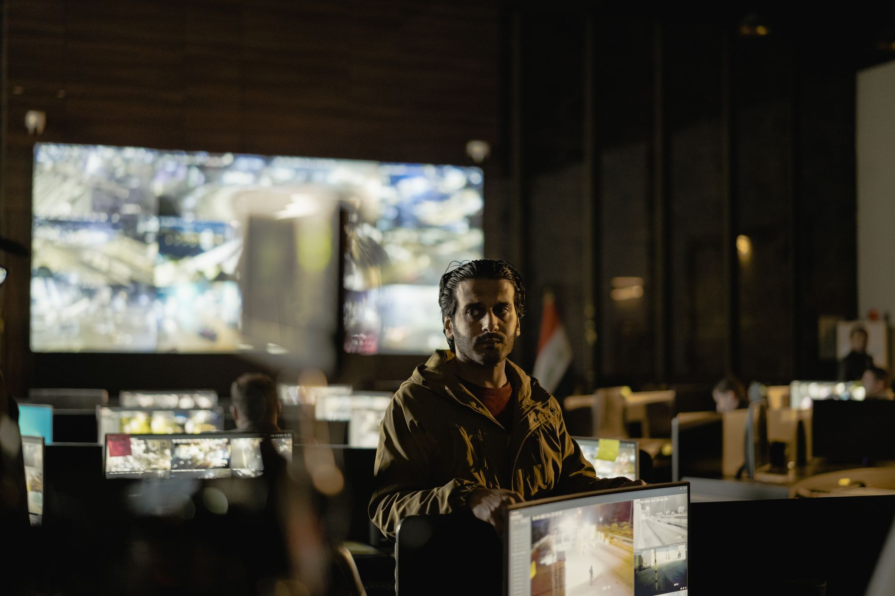
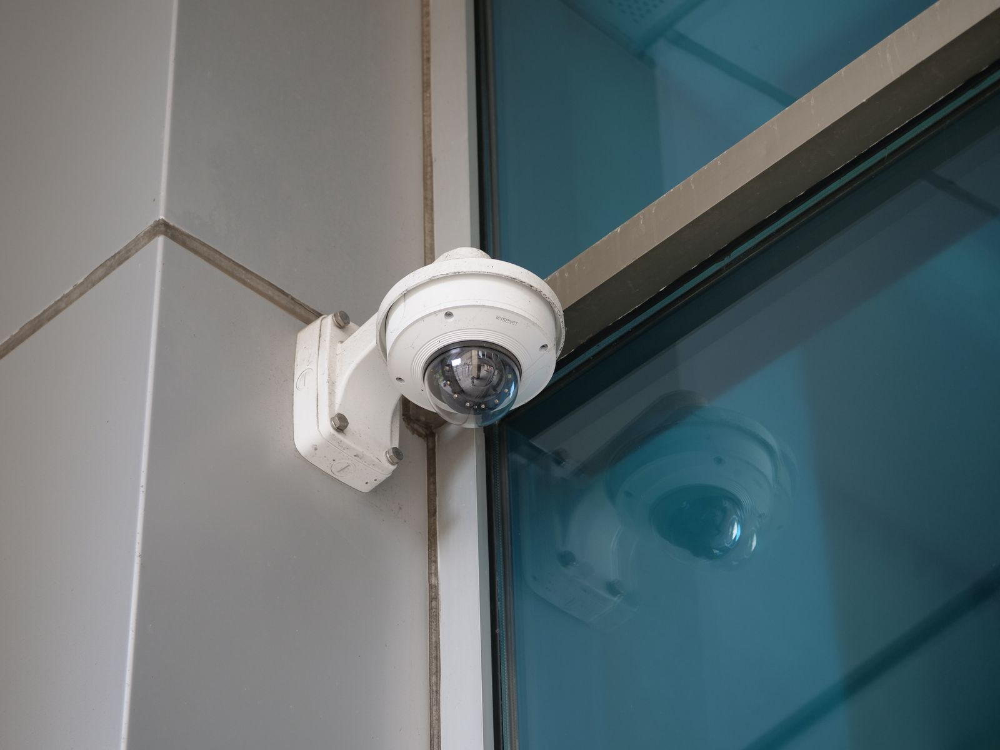
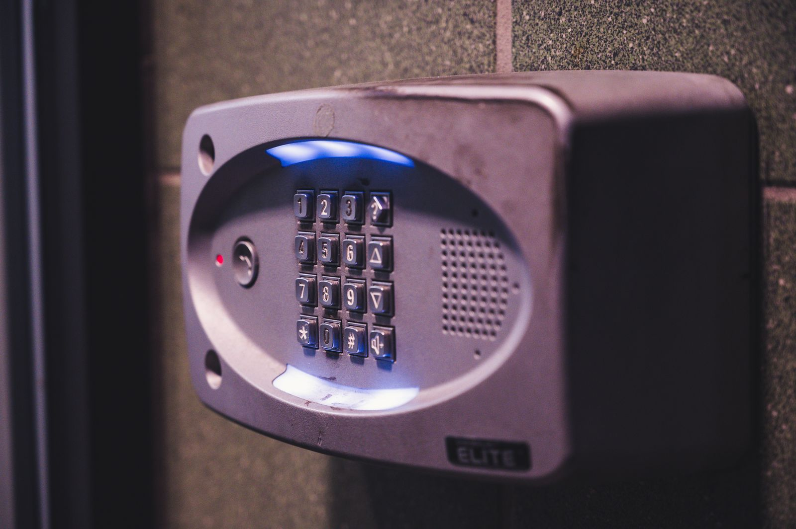

O cuidado
não para.
24h
Monitoramento contínuo e apoio tático 24 horas, conforme os serviços divulgados pela Hoope.



Monitoramento 24 horas, apoio tático, alarmes e CFTV. Fale com Carlos Gregório em Várzea Grande/MT.
Consultar minha proteçãoProteção para a sua rotina.
Tecnologia para acompanhar.
24h
Monitoramento contínuo e apoio tático 24 horas, conforme os serviços divulgados pela Hoope.
Alarmes e CFTV para conversar sobre a segurança do seu patrimônio.
R$ 450/mês
Valor divulgado para monitoramento com apoio tático, alarmes e CFTV.
Consultar a oferta ↗Confirme vigência, cobertura, equipamentos, instalação e condições com Carlos.
A Hoope Segurança reúne monitoramento, apoio tático, alarmes e CFTV. Em Várzea Grande/MT, Carlos Gregório é o contato para entender a sua necessidade e apresentar as condições de atendimento.
Conte o que você precisa proteger. O primeiro passo é conhecer o local e consultar a solução adequada.
Conversar com Carlos ↗Conheça os serviços anunciados pela Hoope. Selecione um assunto para preparar sua consulta com Carlos.
Acompanhamento contínuo anunciado com equipe especializada, 24 horas por dia. Consulte a estrutura e o escopo para o seu local.
Serviço divulgado com disponibilidade 24 horas para situações de risco. Confirme cobertura, acionamento e condições de atendimento.
Sistemas de alarme integram as soluções de segurança da Hoope. Apresente a necessidade do imóvel e tire dúvidas sobre os recursos.
Circuito fechado de televisão para acompanhamento por imagens. Converse sobre pontos de câmera, visualização e a configuração disponível.
Tecnologia, pessoas
e proteção na mesma conversa.
24hmonitoramento
24hapoio tático
Várzea GrandeMato Grosso
Uma visão dos recursos envolvidos na segurança eletrônica. Fotografias ilustrativas, sem representar instalações ou equipe da Hoope.
Monitoramento
Imagens e acompanhamento fazem parte da conversa sobre a segurança do seu patrimônio.
Fotografia ilustrativa · AMORIE SAM
CFTV
Conte quais áreas precisam de atenção para consultar a configuração de câmeras disponível.
Fotografia ilustrativa · Giant Asparagus
Alarmes
Converse sobre a rotina do imóvel e entenda as opções de alarme que podem ser avaliadas.
Fotografia ilustrativa · Brett Sayles
Imagens de banco para contextualizar os serviços. Não são um portfólio de instalações.
3 referências exibidas.
Prepare as informações do local para conversar sobre cobertura, recursos e contratação.
Informe cidade, bairro e tipo de imóvel para consultar a disponibilidade de atendimento.
Diga o que você busca e se já possui equipamentos. Essas informações ajudam a iniciar a consulta.
Confirme os serviços incluídos, os equipamentos, a instalação, os valores e as condições antes de contratar.
Fale com Carlos Gregório.
Conte o que você quer proteger.
O material da Hoope divulga monitoramento 24 horas, apoio tático 24 horas, alarmes e CFTV. Converse com Carlos para conhecer o escopo e as opções disponíveis para o seu imóvel.
O contato informa Várzea Grande, Mato Grosso. Envie cidade e bairro para confirmar a cobertura do seu endereço e as condições do serviço desejado.
Esse é o valor mensal divulgado no material fornecido. Antes de contratar, confirme vigência da oferta, serviços incluídos, equipamentos, instalação, eventuais custos adicionais e condições contratuais com Carlos.
Sim. Monitoramento e apoio tático são divulgados como serviços 24 horas. Formas de acionamento, procedimentos e cobertura são esclarecidos durante a consulta.
Não. As fotografias são de banco de imagens e ilustram ambientes de monitoramento, câmeras e alarmes. Solicite a Carlos informações e referências próprias da Hoope.
Várzea Grande, Mato Grosso, é a localização informada no perfil de Carlos. O mapa apresenta a cidade como referência de atendimento, sem indicar loja ou sede. Consulte a cobertura para o seu imóvel.
Abrir cidade no Google Maps ↗